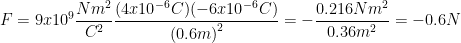

Salir
Proceso
Veamos ahora un ejercicio para entender mucho mejor el tema.
Nota:
- Si las cargas son de signo opuesto (+ y –), la fuerza "F" será negativa, lo que indica una fuerza de atracción
- Si las cargas son del mismo signo (– y – ó + y +), la fuerza "F" será positiva, lo que indica una fuerza de repulsión .
Ejemplo : Dos cargas eléctricas q1 = 4μC y q2= -6μC están colocadas a una distancia de 60cm, ¿cuál es el módulo de fuerza de atracción entre ellas?
Nota: recordar que al hablar de μ = 1*10ˆ(-6) C
Solución:
Tenemos dos cargas, y podemos observar también que ambas son diferentes una es positiva y la otra negativa, por lo que si vemos el gráfico que se colocó más arriba, nos damos cuenta que el resultado sin duda será de atracción, se atraerán ambas cargas.
Ahora colocando nuestros datos tenemos:
q1 = 4μC
q2= -6μC
d = 60 cm = 0.6m
Recordar que la distancia, tenemos que trabajarla en metros y no en centímetros, tal como lo marca el sistema internacional.
Ahora apliquemos la fórmula y tendremos algo similar a esto:
